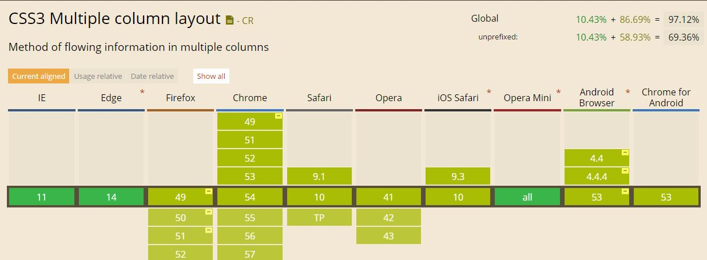

Compatibilidades con los navegadores actuales.

Column-count
Esta propiedad especifica la cantidad de columnas en la que se dividirá un elemento.
-webkit-column-count: 4; /* Para Chrome, Safari, Opera */
-moz-column-count: 4; /* Para Firefox */
column-count: 4;
El siguiente ejemplo muestra un elemento dividido en 4 columnas.
Normally, both your asses would be dead as fucking fried chicken, but you happen to pull this shit while I'm in a transitional period so I don't wanna kill you, I wanna help you. But I can't give you this case, it don't belong to me. Besides, I've already been through too much shit this morning over this case to hand it over to your dumb ass.
Your bones don't break, mine do. That's clear. Your cells react to bacteria and viruses differently than mine. You don't get sick, I do. That's also clear. But for some reason, you and I react the exact same way to water. We swallow it too fast, we choke. We get some in our lungs, we drown. However unreal it may seem, we are connected, you and I. We're on the same curve, just on opposite ends.
Well, the way they make shows is, they make one show. That show's called a pilot. Then they show that show to the people who make shows, and on the strength of that one show they decide if they're going to make more shows. Some pilots get picked and become television programs. Some don't, become nothing. She starred in one of the ones that became nothing.
Column gap
Esta propiedad especifica la distancia del espaciado entre columnas. En el siguiente ejemplo vemos un párrafo de 4 columnas y espaciado de 50 pixeles.
-webkit-column-gap: 50px;/* Para Chrome, Safari, Opera */
-moz-column-gap: 50px; /* Para Firefox */
column-gap: 50px
Well, the way they make shows is, they make one show. That show's called a pilot. Then they show that show to the people who make shows, and on the strength of that one show they decide if they're going to make more shows. Some pilots get picked and become television programs. Some don't, become nothing. She starred in one of the ones that became nothing.
Now that there is the Tec-9, a crappy spray gun from South Miami. This gun is advertised as the most popular gun in American crime. Do you believe that shit? It actually says that in the little book that comes with it: the most popular gun in American crime. Like they're actually proud of that shit.
You think water moves fast? You should see ice. It moves like it has a mind. Like it knows it killed the world once and got a taste for murder. After the avalanche, it took us a week to climb out. Now, I don't know exactly when we turned on each other, but I know that seven of us survived the slide... and only five made it out. Now we took an oath, that I'm breaking now. We said we'd say it was the snow that killed the other two, but it wasn't. Nature is lethal but it doesn't hold a candle to man.
Column-rule
Propiedades:
column-rule-width
column-rule-style
column-rule-color
Esta propiedad especifica el estilo de la línea de separación de las columnas. En el siguiente ejemplo aplicamos en una misma línea una anchura de la línea separadora de 6px de ancho. estilo de línea sólida y de color rojo.
webkit-column-rule: 6px solid red; /* Para Chrome, Safari, Opera */
-moz-column-rule: 6px solid red; /* Para Firefox */
column-rule: 6px solid red;
Well, the way they make shows is, they make one show. That show's called a pilot. Then they show that show to the people who make shows, and on the strength of that one show they decide if they're going to make more shows. Some pilots get picked and become television programs. Some don't, become nothing. She starred in one of the ones that became nothing.
Now that there is the Tec-9, a crappy spray gun from South Miami. This gun is advertised as the most popular gun in American crime. Do you believe that shit? It actually says that in the little book that comes with it: the most popular gun in American crime. Like they're actually proud of that shit.
You think water moves fast? You should see ice. It moves like it has a mind. Like it knows it killed the world once and got a taste for murder. After the avalanche, it took us a week to climb out. Now, I don't know exactly when we turned on each other, but I know that seven of us survived the slide... and only five made it out. Now we took an oath, that I'm breaking now. We said we'd say it was the snow that killed the other two, but it wasn't. Nature is lethal but it doesn't hold a candle to man.
column-rule-width
Esta propiedad especifica la anchura de la línea entre columnas
Sus valores son:
thin: Anchura fina.
thick: Anchura gruesa.
length: Nosotros definimos el tamaño.
En el ejemplo aplicamos una anchura de la línea de valor thin.
column-rule-width: thin
Well, the way they make shows is, they make one show. That show's called a pilot. Then they show that show to the people who make shows, and on the strength of that one show they decide if they're going to make more shows. Some pilots get picked and become television programs. Some don't, become nothing. She starred in one of the ones that became nothing.
Now that there is the Tec-9, a crappy spray gun from South Miami. This gun is advertised as the most popular gun in American crime. Do you believe that shit? It actually says that in the little book that comes with it: the most popular gun in American crime. Like they're actually proud of that shit.
You think water moves fast? You should see ice. It moves like it has a mind. Like it knows it killed the world once and got a taste for murder. After the avalanche, it took us a week to climb out. Now, I don't know exactly when we turned on each other, but I know that seven of us survived the slide... and only five made it out. Now we took an oath, that I'm breaking now. We said we'd say it was the snow that killed the other two, but it wasn't. Nature is lethal but it doesn't hold a candle to man.
En el siguiente ejemplo aplicamos una anchura de la línea de valor thick.
column-rule-width: thick
Now that we know who you are, I know who I am. I'm not a mistake! It all makes sense! In a comic, you know how you can tell who the arch-villain's going to be? He's the exact opposite of the hero. And most times they're friends, like you and me! I should've known way back when... You know why, David? Because of the kids. They called me Mr Glass.
My money's in that office, right? If she start giving me some bullshit about it ain't there, and we got to go someplace else and get it, I'm gonna shoot you in the head then and there. Then I'm gonna shoot that bitch in the kneecaps, find out where my goddamn money is. She gonna tell me too. Hey, look at me when I'm talking to you, motherfucker. You listen: we go in there, and that nigga Winston or anybody else is in there, you the first motherfucker to get shot. You understand?
En el siguiente ejemplo aplicamos una anchura de línea de valor length, es decir nosotros indicamos el tamaño del ancho de la línea de separación de 12px.Los valores pueden ser dados en "pixeles" o "em", aunque se recomienda usar pixeles como medida.
column-rule-width: 12px
Well, the way they make shows is, they make one show. That show's called a pilot. Then they show that show to the people who make shows, and on the strength of that one show they decide if they're going to make more shows. Some pilots get picked and become television programs. Some don't, become nothing. She starred in one of the ones that became nothing.
Now that there is the Tec-9, a crappy spray gun from South Miami. This gun is advertised as the most popular gun in American crime. Do you believe that shit? It actually says that in the little book that comes with it: the most popular gun in American crime. Like they're actually proud of that shit.
You think water moves fast? You should see ice. It moves like it has a mind. Like it knows it killed the world once and got a taste for murder. After the avalanche, it took us a week to climb out. Now, I don't know exactly when we turned on each other, but I know that seven of us survived the slide... and only five made it out. Now we took an oath, that I'm breaking now. We said we'd say it was the snow that killed the other two, but it wasn't. Nature is lethal but it doesn't hold a candle to man.
column-rule-style
Esta propiedad especifica el estilo de la línea entre columnas
Sus posibles valores:
none: no hay línea separación.
hidden: define una línea de separación oculta.
dotted: línea de separación de tipo puntos.
dashed: línea de separación discontinua.
solid: línea de separación continua.
double: doble línea.
A continuación aplicamos un estilo dotted a la línea.
column-rule-style: dotted.
Well, the way they make shows is, they make one show. That show's called a pilot. Then they show that show to the people who make shows, and on the strength of that one show they decide if they're going to make more shows. Some pilots get picked and become television programs. Some don't, become nothing. She starred in one of the ones that became nothing.
Now that there is the Tec-9, a crappy spray gun from South Miami. This gun is advertised as the most popular gun in American crime. Do you believe that shit? It actually says that in the little book that comes with it: the most popular gun in American crime. Like they're actually proud of that shit.
You think water moves fast? You should see ice. It moves like it has a mind. Like it knows it killed the world once and got a taste for murder. After the avalanche, it took us a week to climb out. Now, I don't know exactly when we turned on each other, but I know that seven of us survived the slide... and only five made it out. Now we took an oath, that I'm breaking now. We said we'd say it was the snow that killed the other two, but it wasn't. Nature is lethal but it doesn't hold a candle to man.
A continuación aplicamos un estilo dashed a la línea.
column-rule-style: dashed
Normally, both your asses would be dead as fucking fried chicken, but you happen to pull this shit while I'm in a transitional period so I don't wanna kill you, I wanna help you. But I can't give you this case, it don't belong to me. Besides, I've already been through too much shit this morning over this case to hand it over to your dumb ass.
Look, just because I don't be givin' no man a foot massage don't make it right for Marsellus to throw Antwone into a glass motherfuckin' house, fuckin' up the way the nigger talks. Motherfucker do that shit to me, he better paralyze my ass, 'cause I'll kill the motherfucker, know what I'm sayin'?
Now that there is the Tec-9, a crappy spray gun from South Miami. This gun is advertised as the most popular gun in American crime. Do you believe that shit? It actually says that in the little book that comes with it: the most popular gun in American crime. Like they're actually proud of that shit.
A continuación aplicamos un estilo solid a la línea.
column-rule-style: solid ;/* Para Chrome, Safari, Opera */
Your bones don't break, mine do. That's clear. Your cells react to bacteria and viruses differently than mine. You don't get sick, I do. That's also clear. But for some reason, you and I react the exact same way to water. We swallow it too fast, we choke. We get some in our lungs, we drown. However unreal it may seem, we are connected, you and I. We're on the same curve, just on opposite ends.Normally, both your asses would be dead as fucking fried chicken, but you happen to pull this shit while I'm in a transitional period so I don't wanna kill you, I wanna help you. But I can't give you this case, it don't belong to me. Besides, I've already been through too much shit this morning over this case to hand it over to your dumb ass. Look, just because I don't be givin' no man a foot massage don't make it right for Marsellus to throw Antwone into a glass motherfuckin' house, fuckin' up the way the nigger talks. Motherfucker do that shit to me, he better paralyze my ass, 'cause I'll kill the motherfucker, know what I'm sayin'?
Your bones don't break, mine do. That's clear. Your cells react to bacteria and viruses differently than mine. You don't get sick, I do. That's also clear. But for some reason, you and I react the exact same way to water. We swallow it too fast, we choke. We get some in our lungs, we drown. However unreal it may seem, we are connected, you and I. We're on the same curve, just on opposite ends.
A continuación aplicamos un estilo double a la línea.
column-rule-style: double
Normally, both your asses would be dead as fucking fried chicken, but you happen to pull this shit while I'm in a transitional period so I don't wanna kill you, I wanna help you. But I can't give you this case, it don't belong to me. Besides, I've already been through too much shit this morning over this case to hand it over to your dumb ass.
Look, just because I don't be givin' no man a foot massage don't make it right for Marsellus to throw Antwone into a glass motherfuckin' house, fuckin' up the way the nigger talks. Motherfucker do that shit to me, he better paralyze my ass, 'cause I'll kill the motherfucker, know what I'm sayin'?
Now that there is the Tec-9, a crappy spray gun from South Miami. This gun is advertised as the most popular gun in American crime. Do you believe that shit? It actually says that in the little book that comes with it: the most popular gun in American crime. Like they're actually proud of that shit.
A continuación aplicamos un estilo hidden a la línea.
column-rule-style: hidden
Normally, both your asses would be dead as fucking fried chicken, but you happen to pull this shit while I'm in a transitional period so I don't wanna kill you, I wanna help you. But I can't give you this case, it don't belong to me. Besides, I've already been through too much shit this morning over this case to hand it over to your dumb ass.
Look, just because I don't be givin' no man a foot massage don't make it right for Marsellus to throw Antwone into a glass motherfuckin' house, fuckin' up the way the nigger talks. Motherfucker do that shit to me, he better paralyze my ass, 'cause I'll kill the motherfucker, know what I'm sayin'?
Now that there is the Tec-9, a crappy spray gun from South Miami. This gun is advertised as the most popular gun in American crime. Do you believe that shit? It actually says that in the little book that comes with it: the most popular gun in American crime. Like they're actually proud of that shit.
column-rule-color
Esta propiedad especifica el color de la línea entre columnas. Su valor por defecto es el color del elemento.
El color puede ser inicializado de distintas formas:
El nombre del color: red, blue, yellow, etc.
Su valor hexadecimal: #000000, #FFFFFF, etc.
Su valor rgb: rgb(120,240,255), rgba(255,240,20,0.5), etc.
Valor initial: valor por defecto.
A continuación aplicamos un color ya definido yellow a la línea.
column-rule-color: yellow.
Normally, both your asses would be dead as fucking fried chicken, but you happen to pull this shit while I'm in a transitional period so I don't wanna kill you, I wanna help you. But I can't give you this case, it don't belong to me. Besides, I've already been through too much shit this morning over this case to hand it over to your dumb ass.
Look, just because I don't be givin' no man a foot massage don't make it right for Marsellus to throw Antwone into a glass motherfuckin' house, fuckin' up the way the nigger talks. Motherfucker do that shit to me, he better paralyze my ass, 'cause I'll kill the motherfucker, know what I'm sayin'?
Now that there is the Tec-9, a crappy spray gun from South Miami. This gun is advertised as the most popular gun in American crime. Do you believe that shit? It actually says that in the little book that comes with it: the most popular gun in American crime. Like they're actually proud of that shit.
En el siguiente ejemplo aplicamos un color hexadecimal #CC6900 a la línea.
column-rule-color: #CC6900
Normally, both your asses would be dead as fucking fried chicken, but you happen to pull this shit while I'm in a transitional period so I don't wanna kill you, I wanna help you. But I can't give you this case, it don't belong to me. Besides, I've already been through too much shit this morning over this case to hand it over to your dumb ass.
Look, just because I don't be givin' no man a foot massage don't make it right for Marsellus to throw Antwone into a glass motherfuckin' house, fuckin' up the way the nigger talks. Motherfucker do that shit to me, he better paralyze my ass, 'cause I'll kill the motherfucker, know what I'm sayin'?
Now that there is the Tec-9, a crappy spray gun from South Miami. This gun is advertised as the most popular gun in American crime. Do you believe that shit? It actually says that in the little book that comes with it: the most popular gun in American crime. Like they're actually proud of that shit.
En el siguiente ejemplo aplicamos un color RGB rgb(69,255,69) a la línea.
column-rule-color: rgb(69,255,69)
Normally, both your asses would be dead as fucking fried chicken, but you happen to pull this shit while I'm in a transitional period so I don't wanna kill you, I wanna help you. But I can't give you this case, it don't belong to me. Besides, I've already been through too much shit this morning over this case to hand it over to your dumb ass.
Look, just because I don't be givin' no man a foot massage don't make it right for Marsellus to throw Antwone into a glass motherfuckin' house, fuckin' up the way the nigger talks. Motherfucker do that shit to me, he better paralyze my ass, 'cause I'll kill the motherfucker, know what I'm sayin'?
Now that there is the Tec-9, a crappy spray gun from South Miami. This gun is advertised as the most popular gun in American crime. Do you believe that shit? It actually says that in the little book that comes with it: the most popular gun in American crime. Like they're actually proud of that shit.